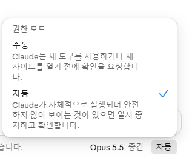

핵심샘플을 주면 분위기가 모입니다 — 하지만 색 · 금지 규칙은 아직 제멋대로입니다. 그래서 4단계(MD)
Part.02
PE7 프롬프트의 7가지 요소
누가 · 누구에게 · 무엇을 · 어떻게 · 재료 · 그릇
PT.02
PE7 프레임워크 — 프롬프트를 이루는 7가지
PE1
Persona
누가
역할 부여
PE2
Identity
누구에게
정체성 지정
PE3
Object
뭐 하려고
목표
PE4
Procedure
어떤 단계를 거쳐
절차 명시
PE5
Sample
마치 이것처럼
샘플
PE6
Ground Data
이 안에서만
자료 범위
PE7
Format
결과물 형태는
형식
PE1·2 : 누가, 누구를 위해
PE3·4 : 무엇을, 어떻게
PE5·6·7 : 재료와 그릇
핵심7가지를 순서대로 채우면 누구나 완성도 높은 결과를 얻습니다
PT.02
PE1 ~ PE4 — 누가, 누구에게, 무엇을, 어떻게
PE1 Persona역할
AI에게 전문가 배역을 줍니다.
“너는 15년 경력의 홍보 디자이너야.”
PE2 Identity대상
읽을 대상과 내 처지를 알려줍니다.
“나는 중소기업 마케팅 담당자고, 20~30대에게 알리려 해.”
PE3 Object목표
무엇을 하려는지 한 문장으로.
“신제품 홍보 포스터 시안을 만들고 싶어.”
PE4 Procedure절차
어떤 순서로 할지 알려줍니다.
“먼저 콘셉트 3가지를 제안하고, 내가 고르면 만들어줘.”
핵심앞의 네 가지만 채워도 결과가 달라집니다
PT.02
PE5 ~ PE7 — 재료와 그릇
PE5 Sample샘플
‘마치 이것처럼’ 견본을 줍니다.
“첨부한 포스터의 분위기를 참고해줘.”
핵심 포인트샘플을 주면 결과가 샘플을 닮습니다
PE6 Ground Data자료
이 안에서만 쓰라고 범위를 줍니다.
“제품명과 가격은 아래 정보만 써줘.”
핵심 포인트AI가 지어내지 못하게 울타리를 칩니다
PE7 Format형식
결과물의 모양을 정합니다.
“글씨 없이, 4:5 세로 이미지로 줘.”
핵심 포인트쓸 수 있는 모양으로 받아야 수정이 줄어듭니다
핵심재료(샘플 · 자료)와 그릇(형식)을 주면 결과가 일정해집니다
PT.02
나쁜 프롬프트 vs 좋은 프롬프트
나쁜 프롬프트
신제품 수분크림 홍보 포스터 만들어줘. 제품명은 ‘아쿠아 데이 크림’, 가격은 29,000원이야.
좋은 프롬프트 (PE7)
너는 15년 경력의 홍보 디자이너야. 나는 중소기업 마케팅 담당자고, 20~30대에게 신제품 수분크림을 알리려 해. 먼저 콘셉트 3가지를 제안하고, 내가 고르면 만들어줘. 첨부한 포스터의 분위기를 참고해. 제품명과 가격은 아래 정보만 써. 글씨 없는 4:5 세로 이미지로 줘. 제품명 : 아쿠아 데이 크림 / 가격 : 29,000원
→ 누가 · 누구에게 · 형태가 모두 불분명
→ 역할 · 대상 · 절차 · 샘플 · 자료 · 형식이 모두 명시
핵심같은 요청인데, 프롬프트 한 줄 차이로 결과의 질이 갈립니다
PT.02
실습 : PE7로 시키면 보고서가 ‘보는 보고서’가 됩니다
ChatGPT에 그대로 붙여넣기 (자료는 실습용 가상 숫자)
결과 보는 법
HTML 파일을 받아 브라우저로 열기 (미리보기도 OK)
1단계 글 보고서와 나란히 놓고 비교
숫자만 우리 팀 실제로 바꾸면 내 보고서
역할 · 자료 · 형식 세 칸이 차이를 만듭니다
핵심같은 주제인데 — 1단계는 ‘읽는 글’, PE7은 숫자 카드 · 그래프 · 타임라인이 있는 ‘보는 보고서’
PT.02
1단계 보고서 vs PE7 보고서
한눈에 보이나요?1단계는 글뿐, PE7은 숫자 카드 · 그래프 · 타임라인
목차 · 구조가 잡혔나요?1단계는 AI 마음, PE7은 내가 정한 순서
숫자를 지어내지 않았나요?준 자료만 썼는지 · ‘확인 필요’ 표시 여부
결과를 단톡방에 올려 주세요
핵심PE7은 AI에게 보내는 업무 지시서입니다 — 다만 매번 7칸을 써야 합니다
Part.03
MD AI의 매뉴얼
INS(지침) · KB(지식) · 디자인 MD
PT.03
MD = AI가 읽는 매뉴얼 파일(.md)
우리 일에서는
AI 세계에서는
들어가는 것
업무 매뉴얼 · 취업규칙
INS (지침)
역할, 순서, 출력 방식 (일하는 순서, 방식을 심어주는 것)
참고서 · 참고 자료
KB (지식)
기준, 샘플, 자료 (대가의 두뇌를 심을 수 있는 KB)
사내 디자인 가이드
디자인 MD
색, 분위기, 구성, 금지
핵심MD는 메모장으로도 열리는 텍스트 파일입니다 — 어려운 코딩이 아닙니다
PT.03
INS + KB = 봇의 구조
대충 입력‘보고서 써줘’
›
봇 = 매뉴얼을 숙지한 전담 알바
INS
업무 지침
어떻게 행동할지 (역할, 순서, 출력 방식)
오해 소지 없이, 딴짓 못하게 꽁꽁 묶는다면?
KB
참고 자료
무엇을 보고 할지 (기준, 샘플, 자료)
대가의 두뇌, 방대한 지식을 심는다면?
›
완성 결과우리 방식대로
핵심업무 지침(INS)과 참고 자료(KB)를 미리 주면 AI가 우리 전담 알바가 됩니다
PT.03
매뉴얼 없이 vs 매뉴얼을 주고 vs 이미 숙지한
1 ~ 3단계매뉴얼 없이 출근
매일 새로 오는 똑똑한 알바. 일을 매번 말로 설명합니다.
“포스터 만들어줘”
핵심 포인트결과가 매번 달라집니다
›
4단계 · MD매뉴얼 받고 출근
일 시키기 전에 업무 지침(INS)과 참고 자료(KB)를 매번 건넵니다.
대화마다 MD 파일 첨부
핵심 포인트결과가 한 톤으로 모입니다
›
5단계 · 봇매뉴얼 숙지하고 출근
출근 전에 업무 매뉴얼을 숙지해 오는 알바. 출근하면 바로 업무 처리가 가능합니다.
주제만 입력
핵심 포인트첨부 없이 늘 같은 방식으로
핵심봇 = 업무 지침과 참고 자료를 미리 받아 숙지한 전담 알바
PT.03
INS가 지휘하고, KB가 규칙을 공급합니다
🤖 포스터 봇 — INS와 KB로 만들어집니다
INS · 작업 순서 — 워크플로우가 담긴 업무 지침
① 주제 확인→② KB 규칙 고르기→③ 이미지 생성→④ 금지 점검
색상 규칙 KB
메인색 · 포인트색 로고 색 기준
분위기 · 구도 KB
깔끔 · 따뜻 여백 넉넉, 중앙
글씨 규칙 KB
글씨는 넣지 않기 제목 자리만 비움
로고 규칙 KB
위치 · 크기 우측 하단 작게
금지 규칙 KB
과한 장식 X 인물 얼굴 X
▲ KB · 디자인 규칙이 여러 개 — INS가 필요한 것을 골라 씁니다
핵심포스터 하나에도 INS는 일하는 순서를, KB는 디자인 규칙을 줍니다
PT.03
대가의 뇌를 심는다 — 리서치 대가의 INS · KB
📄 리서치-대가.md — 한 파일 안에 INS와 KB가 함께 들어 있습니다
INS · 리서치 대가의 일하는 순서 — 워크플로우가 담긴 업무 지침
① 주제 정의→② 다각도 검색→③ 출처 등급→④ 교차검증→⑤ 사실·추정 분리→⑥ 텍스트+HTML 저장
검색 방식 KB
주제어 + 동향 · 사례 · 비교 5개 이상, 공식 → 업계 → 후기
출처 등급 KB
A 공공 · 공식 · 논문 B 언론 · 업계 / C 블로그
검증 기준 KB
핵심 주장은 2곳 이상 단일 출처는 표시
결과 양식 KB
텍스트 요약 5줄 + HTML 보고서 파일
▲ 먼저 읽고 예상해 보세요 — AI는 이 순서와 기준을 그대로 따라 움직입니다
핵심찾는 방식 · 검증 · 결과물 형식까지, 대가의 방법을 파일 하나로 빌려 씁니다
PT.03
4단계 체험 ① 먼저 말로만 리서치 (1단계)
ChatGPT에 붙여넣기 (새 대화)
방법
새 대화에서 이 한 줄만 입력
결과를 캡처해 보관
살펴볼 점
출처가 붙어 있나?
사실과 의견이 구분되나?
HTML 파일로 주나?
핵심대가의 방법 없이는, 조사 방식도 결과 형식도 AI 마음입니다
PT.03
4단계 체험 ② 같은 한 줄 + 리서치 대가 MD
ChatGPT에 붙여넣기 + 리서치-대가.md 첨부
방법
새 대화에서 리서치-대가.md를 먼저 첨부
1단계 한 줄 앞에 ‘다음의 md에 기반해서’만 붙여 입력
앞 장에서 본 대로 움직이나?
다각도로 검색했나?
출처에 A · B · C 등급이 붙었나?
2곳 이상 교차검증을 표시했나?
사실과 추정이 나뉘었나?
텍스트 + HTML 파일이 나왔나?
핵심미리 읽은 INS · KB대로 AI가 움직이는지 확인하세요
PT.03
1단계 vs 4단계 — 리서치
1단계 · 말로만
1단계 결과 (리서치 캡처)
4단계 · 리서치 대가 MD
4단계 결과 (리서치 캡처 · HTML)
핵심같은 한 줄인데, 대가의 INS · KB를 심으면 조사 방식부터 달라집니다
PT.03
디자인 MD 안에는 이게 들어 있습니다
📄 디자인-MD.md — 한 파일 안에 INS와 KB가 함께 들어 있습니다
INS · 작업 순서 — 워크플로우가 담긴 업무 지침
① 주제 확인→② KB 규칙 고르기→③ 이미지 생성→④ 금지 점검
색상 KB
메인 #2D6B7A 포인트 #E8642C 배경 크림
분위기 KB
깔끔하고 신뢰감 있게 따뜻하되 과하지 않게
구성 KB
여백 넉넉, 중앙 정렬 제목 자리는 상단
로고 KB
우측 하단, 작게 원본 비율 유지
금지 KB
글씨 넣기 과한 장식 인물 얼굴
▲ KB · 디자인 규칙 — INS가 순서대로 꺼내 씁니다
핵심규칙을 글로 적어 두면 AI가 매번 같은 기준으로 만듭니다
PT.03
4단계 체험 ② 보고서도 같은 방식
ChatGPT에 붙여넣기 + 보고서-기준.md 첨부
KB가 가르친 것
목차 구조 · 문체(개조식) · 수치 규칙
비교할 점
1단계 결과와 구조가 달라졌나?
문체가 맞춰졌나?
근거 없는 수치를 지어내지 않나?
핵심KB는 우리 회사의 ‘일하는 방식’을 AI에게 가르치는 일입니다
PT.03
5단계 : 우리 회사 디자인 MD 직접 쓰기
복사해서 빈칸 채우기
쓰는 순서
로고 색부터 확인
분위기는 한 단어
금지는 한 가지만
모르면 비워 두기
핵심틀은 같고, 채우는 내용만 우리 회사 것입니다
PT.03
내 MD로 시험하기
메모장에 붙여 ‘우리회사_디자인.md’로 저장폴더에 넣는 것은 컴앱웹에서
내 MD를 첨부해 같은 한 줄 포스터 만들기1단계 · 4단계 결과와 비교
세 장을 단톡방에 공유
핵심MD는 한 번 쓰면 포스터 · 카드뉴스 · 영상에 계속 씁니다
PT.03
MD도 AI에게 써달라고 하면 됩니다
INS 만들기 — ChatGPT에 붙여넣기
KB 만들기 — ChatGPT에 붙여넣기
INS = 대강 쓰고 다듬기
워크플로우를 대강 적는다
“다듬어줘”라고 시킨다
나온 MD를 읽고 고친다
KB = 조사해서 체계화
대가들의 방식을 조사한다
항목별로 나눠 KB 파일로 만든다
우리 회사 방식도 같은 방법으로 추가
핵심핵심은 KB입니다 — 대가들의 방식을 조사한 뒤 체계적으로 KB화합니다
Part.04
봇 만들기
ChatGPT 프로젝트 = 지침 칸 + 파일 칸
PT.04
ChatGPT 프로젝트 = 지침 칸 + 파일 칸
지침 칸 (INS)
너는 ‘프롬프트 대필 봇’이야. 사용자가 대충 쓴 요청을 PE7 기준으로 완성도 높은 프롬프트로 바꿔 쓴다.
[작동 방식] 1. 질문하지 말고 바로 쓴다 2. 모르는 부분은 [채워주세요]로 남긴다
파일 칸 (KB)
디자인-MD.md색 · 분위기 · 구성 · 금지
보고서-기준.md목차 · 문체 · 수치 규칙
핵심프로젝트 하나가 봇 하나입니다 — 지침 칸에 업무 지침, 파일 칸에 참고 자료
PT.04
봇 만드는 순서
1
프로젝트 만들기
새 프로젝트를 만들고 이름을 붙입니다
2
지침 붙여넣기
복사한 지침을 지침 칸에
3
파일 올리기
MD · 기준 문서와 각종 샘플(로고 · 디자인 · 우수사례 문서)을 파일 칸에
4
시험하기
대충 쓴 문장을 넣어 봅니다
핵심순서는 늘 같습니다 — 만들고, 붙이고, 올리고, 시험하기
PT.04
지침 · KB 넣는 곳 — 도구마다 다릅니다
클로드 프로젝트
봇 = 프로젝트
지침 칸
INS — 역할 · 순서 · 출력 방식
파일(컨텍스트) 칸
KB — 규칙 · 샘플 · 캐릭터 시트
→ 이 프로젝트의 모든 대화에 자동 적용
한 번 넣으면 끝 · 가장 편함
ChatGPT 에이전트
지침 · 파일 칸이 없음
📄 숏폼봇_지침.md📄 편집-규칙.md
“첨부한 파일대로 일해 줘”
네, 파일을 읽었습니다. ✅ 지금까지 … ▶ 지금 …
⚠ 대화가 길어지면 잊을 수 있음 → 다시 첨부 · 새 창
첫 메시지에 MD 첨부 + “이 파일대로 일해”
데스크톱 앱 + 폴더
컴앱웹 (Part.05)
📁 릴스 생성
📘 AGENTS.md = INS
📄 색상규칙_12.md KB
📄 폰트규칙_5.md KB
→ 폴더만 연결하면 매번 자동으로 읽음
AGENTS.md = 폴더의 INS
핵심INS · KB는 같고, 넣는 곳만 다릅니다 — 칸이 없으면 첫 메시지에 파일로
PT.04
봇 5종 한눈에 — 지침(INS) + KB
봇
INS (지금 붙임)
KB (나중에 채워도 됨 · 대가의 뇌)
① 프롬프트 대필 봇
PE7로 바꿔 쓰기
프롬프트-대가.md (좋은 사례 · 분야별 PE7)
② 리서치 봇
조사 · 출처 표기
리서치-대가.md (검색 · 검증 · 결과 양식)
③ 보고서 봇
구조 · 문체 지키기
보고서-기준.md + 우수사례 보고서
④ 포스터 봇
콘셉트 3안 → 이미지 생성
디자인 MD + 로고 · 샘플 포스터
⑤ 숏폼 봇
기획 → 생성 2 + FFmpeg 2 → 조립
기획 규칙 · 편집 규칙 + 캐릭터 시트
핵심지침만으로도 봇은 움직이고, KB를 채우면 대가의 뇌를 가진 봇이 됩니다
PT.04
봇 ① 프롬프트 대필 봇 — 구조
✍️ 프롬프트 대필 봇 — 대충 쓴 한 줄을 완성 프롬프트로
INS · 대필 순서 — 워크플로우가 담긴 업무 지침
① 대충 입력→② PE7 칸 채우기→③ 모르는 칸은 [채워주세요]→④ 완성 프롬프트 출력
좋은 프롬프트 사례 KB
잘 쓴 프롬프트 모음 구체성 · 문체 수준
분야별 PE7 예시 KB
보고서 · 포스터 영상 · 기획
우리 회사 용어 KB
직무 · 읽는 사람 말투 · 금지어
▲ 프롬프트-대가.md — 잘 쓰는 사람의 프롬프트를 KB로 가져옵니다
핵심지침만으로도 동작하고, KB를 더하면 대가의 프롬프트 감각을 빌려 씁니다
PT.04
봇 ① 프롬프트 대필 봇 — 지침 (+ 프롬프트-대가.md)
프로젝트 지침 칸에 붙여넣기
핵심지침만으로도 동작하고, 프롬프트-대가.md를 더하면 대가의 뇌를 가진 봇이 됩니다
PT.04
봇 ① 시험하기
대충 한 줄 입력예 : 신제품 홍보 포스터 문구 좀 만들어줘
나온 ‘완성 프롬프트’ 확인[채워주세요] 칸을 직접 채워 보기
채운 프롬프트로 다시 시험하고 단톡방에 공유
핵심빈칸이 곧 내가 몰랐던 정보입니다 — 채울수록 결과가 좋아집니다
PT.04
봇 ② 리서치 봇 — 구조
🔎 리서치 봇 — 조사의 틀을 고정합니다
INS · 조사 순서 — 워크플로우가 담긴 업무 지침
① 주제 정리→② 검색→③ 사실 · 추정 구분→④ 출처 · [확인 필요]→⑤ 5줄 요약 + 활용 제안
검색 방식 KB
주제어 + 동향 · 사례 · 비교 공식 → 업계 → 후기
출처 등급 KB
A 공공 · 공식 · 논문 B 언론 / C 블로그
검증 기준 KB
핵심 주장은 2곳 이상 단일 출처는 표시
결과 양식 KB
텍스트 요약 5줄 + HTML 보고서
▲ 리서치-대가.md — 30번에서 본 대가의 뇌를 봇에 심습니다
핵심지침은 지금, KB는 나중에 — 넣는 순간 대가의 방식으로 조사합니다
PT.04
봇 ② 리서치 봇 — 지침 (+ 리서치-대가.md)
프로젝트 지침 칸에 붙여넣기
핵심리서치-대가.md를 넣으면 30번에서 본 대가의 뇌가 이 봇에 심어집니다
PT.04
봇 ③ 보고서 봇 — 구조
📝 보고서 봇 — 우리 팀 기준으로 초안을 씁니다
INS · 작성 순서 — 워크플로우가 담긴 업무 지침
① 기준 문서 읽기→② 정보로만 근거 쓰기→③ 개조식 초안 작성→④ [확인 필요] 모아 주기
보고서 기준 KB
목차 구조 · 문체 수치 규칙
우수사례 KB
잘 쓴 보고서 구조 표현 수준만 참고
우리 팀 양식 KB
제출 양식 제목 · 분량 규칙
▲ 보고서-기준.md + 우수사례 — 기준 문서를 바꾸면 봇의 실력이 바뀝니다
핵심같은 지침이라도 KB가 다르면 다른 실력의 봇이 됩니다
PT.04
봇 ③ 보고서 봇 — 지침 + 보고서-기준.md
프로젝트 지침 칸에 붙여넣기
핵심기준 문서와 우수사례를 바꾸면 봇의 실력이 바뀝니다
PT.04
봇 ④ 포스터 봇 — 구조
🎨 포스터 봇 — 내 디자인 MD로 업그레이드
INS · 제작 순서 — 워크플로우가 담긴 업무 지침
① 콘셉트 3가지 제안→② 하나 고르기→③ 이미지 생성→④ 규칙 점검 · 수정
색상 규칙 KB
메인색 · 포인트색
분위기 · 구도 KB
깔끔 · 여백 넉넉
로고 규칙 KB
위치 · 크기
샘플 포스터 KB
구도 · 분위기 참고 그대로 베끼지 않기
▲ 우리회사_디자인.md + 로고 · 샘플 — 주제 한 줄만 넣으면 같은 톤이 나옵니다
핵심틀은 INS와 KB가 쥐고, 사용자는 주제 한 줄만 넣습니다
PT.04
봇 ④ 포스터 봇 — 내 디자인 MD로 업그레이드
프로젝트 지침 칸에 붙여넣기
핵심틀은 고정하고, 사용자는 주제 한 줄만 넣는 것이 봇의 핵심입니다
PT.04
봇 ④ 시험하기
주제 한 줄만 입력예 : 봄맞이 신제품 홍보
콘셉트 3가지 중 하나 고르기봇이 먼저 제안합니다
주제만 바꿔 세 번 만들기한 톤으로 모이는지 확인
핵심주제만 바꾸면 같은 톤의 포스터가 나옵니다 — 이것이 ‘봇’입니다
PT.04
봇 ⑤ 숏폼 봇 — 생성 2신 + FFmpeg 2신, 봇이 끝까지 안내
🎬 데스크톱 앱이 내장 브라우저로 웹까지 직접 조작 — 사람은 고르고 확인만
① 기획 상담
3안 중 고르기
›
② 스토리보드
1장 ↺ 만족까지
›
③ AI 생성 2신
캡컷 웹 · 역동적
›
④ FFmpeg 2신
날아오는 · 키네틱 모션
›
⑤ 노래 · 음성
AI가 골라 생성
›
⑥ 최종 조립
FFmpeg · 자막 · 제목
캐릭터 시트 1장
홈페이지에 걸어 둔 시트로 모든 신 같은 얼굴
정면
측면
뒷면
봇이 매번 이렇게 안내합니다
✅ 지금까지 : 기획 확정 · 스토리보드 OK ▶ 지금 : 캡컷 웹에서 1신 생성 중 ⏭ 다음 : FFmpeg로 2신 모션 만들기 👉 해 주실 일 : 캡컷 로그인만 해 주세요
상단 제목
쾅!
말 자막은 이렇게
자막 · 모션 검은 바는 글자 폭에 딱 맞게 흰 글씨 요소는 여기저기서 날아오고 글자는 튀어나오는 키네틱
핵심봇이 ‘지금 한 일 · 다음 할 일’을 알려 주며 이끕니다 — 사람은 고르고 확인만
PT.04
봇 ⑤ 숏폼 봇 — 지침
프로젝트 지침 칸에 붙여넣기
핵심지침 + 편집 규칙 KB를 넣고, 캐릭터 시트는 홈페이지 것을 그대로 씁니다
PT.04
봇 ⑤ 시험하기
첫 메시지 — MD 3개 첨부하고 ___ 한 칸만 채우기
ChatGPT 에이전트라면
지침 칸이 없으니 첫 메시지에 파일을 첨부해야 기억합니다. 길어지면 다시 첨부하세요.
지침 · KB 첨부하고 시작봇이 기획안 3가지를 제안
기획 · 스토리보드 확정“좋아” 할 때까지 한 장만 고치기
봇이 웹을 직접 조작캡컷 · 제미나이 · 일레븐랩스 — 로그인만 해 주기
완성 mp4 받기고칠 신 번호만 말하면 그 신만 다시
핵심사람은 고르고 확인만 — 봇이 ‘지금 · 다음’을 알려 주며 끝까지 갑니다
PT.04
AI 콘텐츠 제작, 이 순서로 올라갑니다
핵심제작 안정 → 운영 안정 → 대중성 — 계단을 건너뛰면 오래 못 갑니다
PT.04
레퍼런스 — 많이 본 사람이 잘 만듭니다
레퍼런스가 없으면
🛠️ ❓
툴은 만질 줄 아는데 뭘 만들지 모르는 상태가 됩니다
스타일의 종류를 많이 알수록 고를 수 있는 것이 많아집니다
핵심남들이 어떤 스타일로 만드는지 많이 봐 두고, 샘플 폴더에 모아 두세요
PT.04
숏폼은 스토리보드 싸움 — 한 장에 모든 신을 먼저 봅니다
영상부터 뽑으면
💳 크레딧
⏱ 시간
🌀 컨텍스트 꼬임
고칠수록 모두 커집니다
핵심기획 다음은 바로 영상이 아니라, 스토리보드 한 장이 마음에 들 때까지입니다
PT.04
시간은 생성 ‘전’에 가장 많이 씁니다
핵심준비가 길수록 생성 · 수정 횟수는 줄어듭니다 — 시간도 비용도 아낍니다
PT.04
캐릭터 시트는 무조건 — 일관성은 생성형 AI의 고질병
핵심캐릭터 시트를 확실히 뽑아 두면 반복 횟수 · 시간 · 비용이 줄어듭니다
PT.04
목소리 클로닝 — 내 목소리로 나레이션 만들기
일레븐랩스
유료품질 · 편의 우선
🎙
필요한 녹음
깨끗한 내 목소리 1~2분
⚡
인스턴트 클론
Starter 요금제부터 (월 약 6달러)
💎
프로페셔널 클론
Creator 요금제부터 · 30분 이상 녹음
🚫
무료 플랜
클로닝 없음 · 상업 이용 불가
구글 AI 스튜디오
무료유료시험은 무료로
🎙
필요한 녹음
내 목소리 30초 + 본인 동의 녹음
🧪
AI 스튜디오 화면
브라우저에서 바로 시험 (사용 한도 내)
🔌
API로 대량 사용
사용량만큼 유료
🔁
저장해 재사용
만든 목소리를 프로젝트마다 다시 씀
핵심내 목소리이거나 사용 권리가 있는 목소리만 복제합니다 — 요금은 바뀌니 가입 전 확인
PT.04
내 봇 정리하기
봇 이름 붙이기예 : 우리팀 포스터 봇
지침을 메모장에 백업봇이 사라져도 다시 만들 수 있게
다음 순서에서 폴더에 보관컴앱웹에서 넣습니다
핵심내 봇은 곧 내 자산입니다 — 지침과 MD는 꼭 저장해 두세요
Part.05
컴앱웹 세팅
컴(폴더) + 앱(데스크톱 앱) + 웹(각종 웹사이트)
PT.05
컴앱웹 — 세 지점이 연결되면 자동화가 됩니다
앱데스크톱 앱 = 중간에서 일하는 AI
데스크톱 앱이 판단하고, 컴과 웹을 직접 움직입니다
컴만들고 · 읽어오고
폴더 · 문서 · 영상을 만들고, 폴더 속 소스(자료 · 샘플 · MD)를 읽어옵니다
웹대신 조작하고
각종 사이트에 접속해 클릭 · 입력 · 생성을 사람 대신 합니다
연결세 지점이 돌아가면
사람이 옮겨 주던 일을 AI가 이어서 처리 = 자동화
핵심데스크톱 앱(AI)이 컴과 웹을 오가며 일하면, 세 지점이 연결된 자동화가 됩니다
PT.05
컴 : 작업 폴더 만들기
AI작업─ ☐ ✕
←→↑
🖥 내 PC › 바탕 화면 › AI작업
⭐ 즐겨찾기
🖥 바탕 화면
AI작업
📄 문서
⬇ 다운로드
🖼 사진
이름넣을 것유형
소스 · 샘플엑셀 · 자료 · 참고 이미지파일 폴더
로고회사 로고파일 폴더
캐릭터다음 주에 만듭니다파일 폴더
MD디자인 규칙 · 보고서 기준파일 폴더
봇지침내 봇 지침 백업파일 폴더
결과AI가 만든 파일파일 폴더
6개 항목
만드는 법
바탕화면 빈 곳 우클릭
새로 만들기 › 폴더
이름 : AI작업
안에 폴더 6개를 똑같이
컴앱웹의 시작
AI에게 “이 폴더를 보고 일해”라고 시키는 것입니다
핵심폴더 구조가 곧 AI가 일하는 책상입니다
PT.05
폴더 예시 ① 포스터 디자인 폴더
포스터 디자인─ ☐ ✕
←→↑
🖥 내 PC › 바탕 화면 › AI작업 › 포스터 디자인
⭐ 즐겨찾기
🖥 바탕 화면
AI작업
포스터 디자인
릴스 생성
이름들어 있는 것구분
작업흐름_INS.md작업 흐름(워크플로우)INS
디자인규칙_12.md디자인 규칙 12가지KB
폰트규칙_4.md폰트 규칙 4가지KB
색상규칙_5.md색상 규칙 5가지KB
배치규칙_5.md배치 규칙 5가지KB
5개 항목
연결하면 AI가 읽는 것
INS작업 흐름
무엇을 어떤 순서로 할지
KB규칙 · 전제 지식
지켜야 할 기준과 알아야 할 것
KB대가의 두뇌
잘하는 사람의 노하우를 문서로
핵심폴더 하나 = 업무 하나. 흐름은 INS로, 규칙과 지식은 KB로 넣습니다
PT.05
폴더 예시 ② 릴스 생성 폴더
릴스 생성─ ☐ ✕
←→↑
🖥 내 PC › 바탕 화면 › AI작업 › 릴스 생성
⭐ 즐겨찾기
🖥 바탕 화면
AI작업
포스터 디자인
릴스 생성
이름들어 있는 것구분
작업흐름_INS.md작업 흐름(워크플로우)INS
샘플영상_프레임시트.png샘플 영상 (프레임시트)샘플
색상규칙_12.md색상 규칙 12가지KB
폰트규칙_5.md폰트 규칙 5가지KB
4개 항목
연결하면 AI가 읽는 것
INS작업 흐름
무엇을 어떤 순서로 할지
KB규칙 · 전제 지식
지켜야 할 기준과 알아야 할 것
KB대가의 두뇌
잘하는 사람의 노하우를 문서로
샘플참고 견본
‘이것처럼’ 보여 주는 예시 파일
핵심업무가 바뀌어도 구조는 같습니다 — INS 1개 + KB 여러 개 + 샘플
PT.05
영상 샘플은 프레임시트 + 설명 KB로 보관
왜?
영상은 무겁고, 움직임 · 소리는 그림에 안 담깁니다
그림 + 글로 나눠 주면 AI가 정확히 따라 합니다
핵심샘플 영상은 프레임시트 한 장으로, 소리 · 빠르기 같은 건 설명 KB로 같이 넣어 두세요
PT.05
샘플 관리가 폴더에 되어 있어야 유리한 이유
매번 같은 샘플
폴더에 있으면 봇이 매번 같은 기준을 참조합니다
이름으로 찾는다
파일명이 곧 검색어입니다 (포스터_미니멀_01)
말로 안 되는 것
그림체 · 질감 · 구도 · 자막은 캡처로 쌓아 둡니다
바꾸기 쉽다
샘플만 교체하면 봇 지침은 그대로 둬도 됩니다
핵심MD가 규칙이라면, 샘플 폴더는 눈으로 보는 규칙입니다
PT.05
샘플 폴더 만들기 · 관리 규칙
샘플 폴더 구성
샘플 / 포스터 : 포스터_미니멀_01.jpg
샘플 / 카드뉴스 : 카드_표지_01.jpg
샘플 / 영상 : 영상_질감_필름_01.jpg
샘플 / 자막 : 자막_굵은노랑_01.jpg
핀터레스트 · 유튜브 화면을 캡처해 모읍니다
관리 규칙
파일명 = 종류_특징_번호
종류당 3~5장만 — 베스트만 남기기
캡처마다 한 줄 메모 : 무엇을 참고할지
MD에 “샘플을 그대로 베끼지 말 것”
빈 폴더 템플릿(zip)을 받아 시작해도 됩니다
핵심템플릿으로 시작하면 폴더 이름이 모두 같아서 봇이 헷갈리지 않습니다
PT.05
폴더 만들고 채우기
바탕화면에 ‘AI작업’ 폴더 만들기템플릿(zip)을 풀거나, 소스 · 샘플 · 로고 · 캐릭터 · MD · 봇지침 · 결과 폴더를 직접 만듭니다
로고 파일 넣기로고 폴더에
내 디자인 MD · 봇 지침 저장해 넣기MD · 봇지침 폴더에
핵심폴더에 넣는 것까지가 세팅입니다 — 이제 AI가 볼 수 있습니다
PT.05
앱 : 데스크톱 앱에서 폴더 열기
1
앱 열기
데스크톱 앱을 실행하고 로그인합니다
2
폴더 연결
AI작업 폴더를 열어 작업 위치로 지정합니다
3
시험
“이 폴더 안 파일 목록을 알려줘”라고 말해 봅니다
핵심목록이 보이면 연결 성공 — AI가 내 폴더를 볼 수 있습니다
PT.05
실습 : 소스만 넣고 숏폼 컷 편집 시키기
데스크톱 앱에 붙여넣기 — ___ 한 칸만 채우세요
핵심재료는 내가 고르고, 이어 붙이기 · 자막 · 제목은 AI에게 맡깁니다
PT.05
확장 : 폰까지 연결 — AI가 폰도 조작합니다
AI가 대신
👀 화면 보고
👆 누르고
⌨ 입력
폰에만 있는 앱도 컴앱웹 안으로 들어옵니다
핵심폰 화면을 PC에 띄우면, 데스크톱 앱이 컴퓨터 유즈로 폰 앱까지 움직입니다
PT.05
클로드 권한 모드 — 경우에 따라 ‘자동’이 훨씬 편합니다

입력창 오른쪽 아래 ‘수동 / 자동’ 버튼에서 바꿉니다
수동 하나하나 확인
새 도구를 쓰거나 새 사이트를 열 때마다 “해도 될까요?”를 묻습니다
👉 처음 써 보는 작업 · 결제 · 중요한 계정
자동 알아서 진행
스스로 실행하고, 위험해 보이는 것만 멈춰서 확인합니다
👉 숏폼 봇처럼 여러 사이트를 오가는 긴 작업 · 반복 작업
자동이어도 결제 · 삭제 · 전송처럼 되돌릴 수 없는 일은 멈추고 확인을 받습니다
핵심처음 · 중요한 일은 수동, 익숙하고 긴 일은 자동 — 컴앱웹 자동화가 끊기지 않습니다
Part.06
PPT 만들기 1~6단계 + 애드인
같은 원본 PPT를 단계마다 다시 입혀 봅니다
PT.06
요즘 대세 : HTML로 먼저, PPT · PDF는 나중에
1
HTML로 먼저 만든다
AI에게 말로 시키면 웹 페이지(HTML)로 바로 완성합니다
2
말로 고친다
수정도 말로, 링크 하나로 바로 공유합니다
3
필요할 때 내려받기
회의나 제출용이 필요하면 PPT 또는 PDF로 변환합니다
이 교안도 HTML입니다
지금 보시는 이 슬라이드도 HTML로 만들었습니다. 이어지는 PPT 실습은 ‘PPT 파일이 꼭 필요할 때’의 방법입니다.
핵심PPT가 꼭 필요한지 먼저 물어보세요 — 화면 공유용이면 HTML로 충분합니다
PT.06
같은 원본, 단계마다 다시 입힙니다
단계
PPT에서는
도구
1 말로
디자인 없는 원본 2장 만들기
ChatGPT
2 샘플
핀터레스트 캡처를 주고 디자인 입히기
ChatGPT
3 프롬프팅
원하는 디자인을 말로 → AI가 지시문 대필
ChatGPT
4 MD
외부 디자인 MD를 받아 입히기
ChatGPT
5 봇 · 스킬
내 디자인 MD를 프로젝트에 고정
ChatGPT 프로젝트
6 자동화
폴더의 보고서가 PPT로 (마지막 시연)
컴앱웹
핵심내용은 그대로, 디자인만 바뀝니다 — 마지막에 파워포인트 애드인으로 부분 수정까지
PT.06
1단계 · 디자인 없는 원본 만들기
ChatGPT에 붙여넣기
꼭 해 두세요
결과를 ‘원본.pptx’로 저장 — 이후 계속 이 원본을 씁니다
왜 디자인을 빼나요?
처음부터 꾸미면 단계별 차이가 안 보입니다. 글만 있는 원본이 비교의 기준입니다.
핵심원본 2장이 이번 파트의 출발점입니다
PT.06
2단계 · 샘플 — 핀터레스트에서 캡처해 입히기
ChatGPT에 붙여넣기 + 샘플 이미지 첨부
샘플 구하기
핀터레스트 · 미리캔버스에서 마음에 드는 PPT 한 장 캡처
센스를 갖기보다 센스를 많이 알기
보여 주면 쉽게 합니다 — 샘플은 폴더(샘플/PPT)에 쌓아 두세요.
핵심샘플 한 장이면 분위기가 모입니다
PT.06
3단계 · 프롬프팅 — 디자인을 말로, 지시문은 AI가
① 디자인 지시문 받기
② 받은 지시문으로 적용
포인트
디자인을 말로 설명하면 AI가 정확한 지시문으로 바꿔 줍니다 (대필)
핵심말 → 지시문(대필) → 적용, 두 번에 나눠 합니다
PT.06
4단계 · MD — 외부 디자인 MD 받아 입히기
디자인 MD 구하는 곳
브랜드 디자인 MD 모음 : github.com/VoltAgent/awesome-design-md
디자인 MD 전문 사이트 : styles.refero.design
마음에 드는 MD 파일 하나 다운로드
디자인 MD란?
색 · 글꼴 · 톤 · 구성 규칙을 적은 문서 = AI에게 주는 ‘옷장’
ChatGPT에 붙여넣기 + 디자인 MD 첨부
핵심MD 파일 하나만 바꿔 끼우면 완전히 다른 모습이 됩니다
PT.06
같은 원본, 네 가지 옷
1단계디자인 없음 — 글만 나열
2단계 샘플샘플의 분위기는 따라오지만 색 · 글꼴은 제멋대로
3단계 프롬프팅내가 말한 규칙은 따라오지만 매번 설명해야 함
4단계 MD규칙이 문서에 있어 결과가 일정하고 재사용 가능
핵심옆 사람과 4가지 결과를 나란히 비교해 보세요
PT.06
5단계 · 디자인 MD를 프로젝트에 고정
프로젝트 지침 칸에 붙여넣기
만드는 순서
① ‘PPT 봇’ 프로젝트를 새로 만듭니다
② 파일 칸에 디자인 MD를 넣습니다
③ 지침 칸에 왼쪽 지침을 붙입니다
④ 보고서 내용만 주면 같은 디자인으로 나옵니다
핵심한 번 고정하면 보고서 내용만 주면 같은 디자인으로 나옵니다
PT.06
5단계 · 내 디자인 MD는 이렇게 만듭니다
① 샘플 분석“첨부한 PPT의 디자인 특징을 총 분석해줘” (우리 회사 교안 샘플 등)
② 우선순위 · 약어화“난 가독성이 중요해. 중요한 순서로 나열하고 약어로 정리해줘”
③ MD 파일로 만들기“위 내용을 md 파일로 만들어줘”
④ 프로젝트에 넣기우리회사_디자인.md로 저장해 폴더 · 프로젝트에 보관
핵심MD도 AI에게 써달라고 하면 됩니다 — 사람은 우선순위만 정합니다
PT.06
6단계 · 자동화 — 폴더에서 PPT까지
컴앱웹이 하면
컴 : 폴더의 보고서와 디자인 MD를 읽습니다
앱 : 데스크톱 앱이 PPT를 만듭니다
컴 : 결과 폴더에 .pptx로 저장합니다
컴 · 소스보고서 · 자료
컴 · MD우리회사_디자인.md
앱 · 데스크톱 앱PPT 제작
컴 · 결과pptx 저장
›
›
›
핵심마지막 시연에서 이 방식으로 PPT가 만들어집니다
PT.06
애드인 · 파워포인트 안에 ChatGPT 달기
1
설치
파워포인트 → 홈 → 추가 기능에서 ChatGPT를 검색해 추가
2
로그인
ChatGPT 계정으로 로그인합니다
3
지시
열린 작업창에서 슬라이드를 보며 말로 지시
언제 쓰나요?
복잡하고 세밀한 수정 · 톤 맞추기에 좋습니다. 처음 초안은 채팅으로, 다듬기는 애드인으로.
핵심파워포인트를 벗어나지 않고 그 자리에서 고칩니다
PT.06
애드인 실습 · 슬라이드 한 장만 고치기
애드인 작업창에 입력
방법
슬라이드(또는 개체)를 선택하고 지시하면 그 부분만 바뀝니다
⚠️ 베타 기능
결과를 꼭 확인하고, 작업 전에 파일을 복사해 두세요.
핵심선택한 곳만 바꿔 달라고 말하는 것이 요령입니다
PT.06
PPT 잘 만드는 3가지 요령
샘플 3~5장을 먼저 제대로그 장표들이 곧 디자인 규칙서가 되어 나머지가 같은 기준으로 정렬됩니다
소소한 오류는 직접위치 몇 px을 스무 번 요청하느니 5분 직접 고치는 편이 빠릅니다
내용 먼저, 디자인은 나중에구성안을 확정한 뒤에 옷을 갈아입힙니다
핵심맡길 일과 내가 할 일의 경계를 먼저 정하세요
Part.07
마지막 시연
컴 · 앱 · 웹이 한꺼번에 움직입니다
PT.07
마지막 시연 — 준비 : 폴더와 소스
AI작업 폴더 구조
소스 : 시연 중 집계 엑셀 · 교안 PDF가 쌓임
사진 : 강의 사진 (미리 넣어 둠)
로고 : 회사 로고 (미리 넣어 둠)
디자인예시 : 참고 디자인 (미리 넣어 둠)
결과 : PPT · HTML · 영상이 저장됨
시연에서 일어날 일
앱이 캘린더에서 하반기 강의 횟수를 센다
앱이 Gmail에서 최신 교안 PDF를 내려받는다
앱이 PPT · HTML을 만든다
웹(Firefly · 일레븐랩스)에서 영상 · 나레이션 · 노래를 만들고, FFmpeg로 편집한다
모든 파일이 폴더에 정리된다
핵심사진 · 로고 · 디자인 예시는 미리 폴더에 넣어 둡니다 — 나머지는 시연 중에 쌓입니다
PT.07
마지막 시연 ① 캘린더와 메일에서 모으기
한 줄 지시 ①
앱 · 캘린더하반기 강의 일정 찾기
앱 · 집계횟수 · 종류 정리 → 엑셀
앱 · Gmail최신 교안 PDF 찾기
컴 · 소스 폴더엑셀 + PDF 저장
›
›
›
핵심횟수는 캘린더에서, 교안은 메일에서 — 모은 소스는 ‘소스’ 폴더에 쌓입니다
PT.07
마지막 시연 ② 만들고 정리하기
한 줄 지시 ②
앱 · 제작PPT · HTML 만들기
컴 · 참고사진 · 로고 · 디자인 예시
웹 · Firefly · 일레븐랩스영상 · 나레이션 · 노래
컴 · FFmpeg → 결과20초로 편집 · 저장
›
›
›
핵심컴 · 앱 · 웹을 오가며 만들고, 결과는 폴더에 정리됩니다
PT.07
시연 해설 — 무슨 일이 일어났을까?
컴이 한 일
폴더를 만들어 소스를 보관하고, FFmpeg로 20초 숏폼으로 편집했다
앱이 한 일
캘린더 · 메일을 뒤져 집계하고, PPT · HTML을 만들었다
웹이 한 일
Firefly에서 영상 클립을, 일레븐랩스에서 나레이션 · 노래를 만들었다
결과
모든 소스와 결과물이 폴더에 정리됐다
핵심오늘 만든 폴더 · 봇 · MD가 이 시연의 재료입니다
오늘 정리
① 아무말(1단계)과 MD(4단계)는 결과가 다르다 ② PE7로 쓰고 INS + KB로 봇이 된다 ③ 컴앱웹으로 폴더 · 앱 · 웹을 묶는다
 ChatGPT
ChatGPT 구글 로그인
구글 로그인 클로드
클로드 그록
그록 노트북LM
노트북LM 구글 플로우
구글 플로우 일레븐랩스
일레븐랩스 수노
수노 캡컷 PC
캡컷 PC